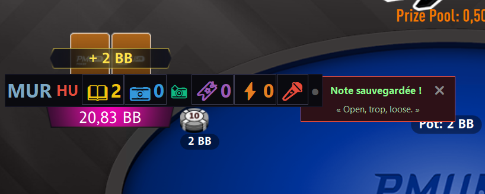

🎤 Notes Vocales EXCLUSIF
Parlez au lieu de taper. SpinNova transcrit automatiquement votre voix en texte grâce à l'IA embarquée, sans connexion internet. Vos notes restent 100% privées.

Le micro en cours d'enregistrement

Transcription automatique sauvegardée
🎙️
Appuyez pour parler
🤖
IA transcrit en texte
💾
Note sauvegardée